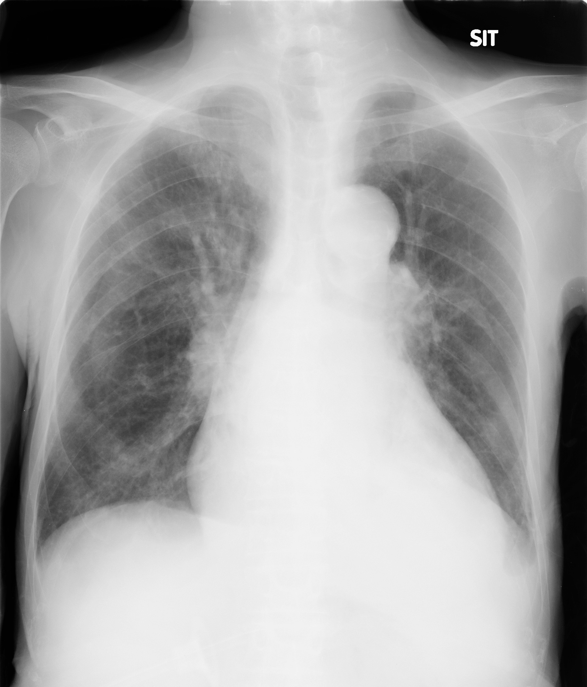
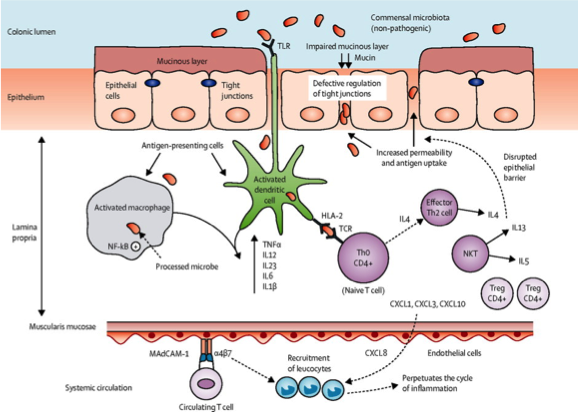

腎硬化症による末期腎不全に多発動静脈血栓症を合併し、感染を繰り返し死亡に至った60代男性
- 東京逓信病院研修医2年
- 平川雄亮
- 同 腎臓内科
- 東原崇明、松村実美子、宇仁理恵、高野秀樹
- 同病理科
- 岸田由起子，田村浩一
はじめに
本症例で苦慮したこと: 「慢性下痢症」と「多発動静脈血栓」
本症例の特徴
- 末期腎不全による易感染性で感染を繰り返した
- 感染性腸炎や抗菌薬関連腸炎等では説明がつかない慢性下痢症が6ヶ月間持続
- 感染や透析, Afを背景に血栓リスクは高かった
- 一方で、想定される以上に重度の多発動静脈血栓症を認めた
症例： 69歳男性
- 主訴
- 腎機能低下
- 現病歴
- 以前よりAfを指摘されていたが、両側視床出血によりADL全介助状態となり、抗凝固療法は中止していた。
- 入院4日前より傾眠傾向が出現し、SpO2低下を伴うようになったため、当院救急外来を紹介受診。
- 精査の結果、肺炎を契機とした慢性心不全増悪の診断で、循環器内科入院となった。
- 入院同日より抗生剤加療と共に、利尿剤ラシックスによる除水療法を開始し心不全は改善傾向にあったが、腎機能は入院時sCr 1.17 mg/dlより急速に増悪した。
- 循環器内科入院9日後にはsCr 5.63mg/dlまで増悪し、精査加療目的に同日当科に転科となった。(第1病日)
症例： 69歳男性
- 既往歴
- 50歳頃: 高血圧, Af, 慢性膀胱炎, 55歳: 右視床出血,
- 60歳: 左視床出血(胃瘻造設)
- 家族歴
- 詳細不明
- アレルギー
- food：(-), drug：(-)
- 生活歴
- 飲酒:詳細不明, 喫煙:詳細不明
- 内服歴
- エナラプリル5mg2T2X, フェロジピン5mg2T2X
- ラックビー2g2X, ジゴキシン0.25mg1T1X
- フロセミド20mg1T1X, ファモチジン20mg1T1X
- ロスバスタチン2.5mg1T1X
転科時現症
- 全身
- 発語不能だがジェスチャーにより意思疎通可
- 身長 166.0 cm, 体重 54.60 kg, BMI 19.8 kg/㎡
- Vital
- BT 36.5 ℃, PR 90 bpm, BP 152/103 mmHg,
- SpO2 98 %(酸素1L/分)
- 頭頸部
- 眼瞼結膜貧血なし, 眼球結膜黄染なし,
- 頸部リンパ節腫脹なし
- 心音
- Ⅰ➡Ⅱ➡Ⅲ(-)Ⅳ(-), no murmur
- 呼吸音
- 両側でcorase crackle聴取
- 腹部
- 平坦/軟, 圧痛なし, 腸蠕動音正常
- 心窩部に胃瘻あり、発赤なし
- 四肢
- 下腿浮腫なし、足背動脈触知可
転科時検査所見
| 尿検査 |
|
|
| PH |
5.5 |
|
| 比重 |
1.017 |
|
| ブドウ糖 |
(-) |
|
| 白血球 |
+1 |
|
| 亜硝酸塩 |
(-) |
|
| 蛋白質 |
+3 |
|
| 潜血 |
+1 |
|
| 蛋白 |
10 |
mg/dl |
| Na |
40.8 |
mEq/l |
| FENA |
1.6 |
% |
| FEUN |
44.2 |
% |
| TP/Cre |
4.15 |
g/g・Cre |
| NAG |
38.2 |
Ｕ/l |
| β2MG |
5683 |
ng/ml |
| ﾛｳ様円柱 |
5-19/100 |
|
| 脂肪円柱 |
1-4/100L |
|
| 上皮円柱 |
1-4/100L |
|
| 凝固 |
|
|
| PT |
74.5 |
% |
| APTT |
36.7 |
s |
| 血算 |
|
|
| WBC |
7400 |
/μl |
| Hb |
12.9 |
g /dl |
| Hct |
40.4 |
% |
| Plt |
226 |
万/μl |
| 生化学 |
|
|
| Na |
147.2 |
mEq/l |
| K |
3.5 |
mEq/ |
| Cl |
103.9 |
mEq/ |
| Ca |
8.6 |
mg/dl |
| P |
4.6 |
mg/dl |
| AST |
24 |
IU/l |
| ALT |
22 |
IU/l |
| T.Bill |
0.4 |
mg/dl |
| γ-GTP |
43 |
IU/l |
| LDH |
261 |
IU/l |
| Alb |
2.8 |
g/dl |
| BUN |
68.5 |
mg/dl |
| Cre |
4.79 |
mg/dl |
| UA |
7.3 |
mg/dl |
| CK |
37 |
IU/L |
| 血清 |
|
|
| TSH |
2.15 |
μU/ml |
| FT3 |
2.6 |
pg/ml |
| FT4 |
1.19 |
ng/dl |
| iPTH |
174 |
pg/ml |
| BNP |
2662 |
pg/ml |
| CRP |
0.36 |
mg/dl |
| RA |
8 |
IU/mL |
| ASO |
177 |
IU/mL |
| IgA |
268 |
mg/dL |
| IgG |
1102 |
mg/dL |
| IgM |
43 |
mg/dL |
| IgE |
11 |
IU/mL |
| C3c |
79 |
mg/dL |
| C4 |
36 |
mg/dL |
| 血清補体価 |
38.8 |
mg/dl |
| ANA |
(ー) |
|
| dsDNA-IgG |
(ー) |
|
| MPO ANCA |
(ー) |
|
| PR-3 ANCA |
(ー) |
|
| GBM Ab |
(ー) |
|
画像検査
心電図
HR 76/min, Af rhythm, NAD,
no ST-T change
CXR
CTR 65 %, CPA sharp/ややdull, 肺野clear

臨床経過
- ① 腎機能増悪と透析導入
- ② 炎症反応と抗生剤の推移
- ③ 慢性下痢症
- ④ 多発動静脈血栓
臨床経過
- ① 腎機能増悪と透析導入
- ② 炎症反応と抗生剤の推移
- ③ 慢性下痢症
- ④ 多発動静脈血栓
臨床経過
- ① 腎機能増悪と透析導入
- ② 炎症反応と抗生剤の推移
- ③ 慢性下痢症
- ④ 多発動静脈血栓
臨床経過
- ① 腎機能増悪と透析導入
- ② 炎症反応と抗生剤の推移
- ③ 慢性下痢症
- ④ 多発動静脈血栓
臨床経過
- ① 腎機能増悪と透析導入
- ② 炎症反応と抗生剤の推移
- ③ 慢性下痢症
- ④ 多発動静脈血栓
④ 多発動静脈血栓
動脈表在化後に透析を行っていたが、徐々に返血側の静脈圧が上昇
第144病日に造影CT実施
プロブレムリスト
- #1 CHF(HFrEF, ICM s/o)
- #1-1 Af, #1-2 OMI
- #2 末期腎不全(腎硬化症+PIPC/TAZによる間質性腎炎s/o)/透析導入
- #2-1 腎性貧血, #2-2 CKD-MBD
- #3 感染症
- #3-1 肺炎/膿胸, #3-1-1 胸腔ドレナージ/気胸
- #3-2 サイトメガロウイルス感染症
- #3-3 慢性下痢症 #3-3-1 抗菌薬関連性腸炎 #3-3-2大腸多発潰瘍)
- #3-4 真菌感染症
- #4 出血性十二指腸潰瘍
- #5 右PCA領域出血性脳梗塞
- #6 多発同静脈血栓症(左肺動脈、左心耳、右房内、右下腿深部静脈)
- #7 原発性アルドステロン症
病理解剖で明らかにしたいこと
- 1. 心機能低下の原因(冠動脈の状態・Afの原因)
- 2. 大腸多発潰瘍/慢性下痢の原因
- 3. 多発動静脈血栓症の分布と原因
- 4. 原発性アルドステロン症の原因
- 5. 直接死因
病理解剖で明らかにしたいこと
- 1. 心機能低下の原因(冠動脈の状態・Afの原因)
- 2. 大腸多発潰瘍/慢性下痢の原因
- 3. 多発動静脈血栓症の分布と原因
- 4. 原発性アルドステロン症の原因
- 5. 直接死因
1. 心機能低下の原因
臨床経過
- 入院時心エコーにて前壁中隔の壁運動が著明に低下していた
- Coronary risk: DL(-), DM(-), HTN(+), smoking(+), obesity(-), 家族歴:詳細不明
- 出血と造影剤腎症のリスクを考慮し、積極的な検査・治療は行わない方針となった。
- 病理ではOMIを示唆する所見もなく、冠動脈も比較的intactであった(詳細は確認中)
病理解剖で明らかにしたいこと
- 1. 心機能低下の原因(冠動脈の状態・Afの原因)
- 2. 大腸多発潰瘍/慢性下痢の原因
- 3. 多発動静脈血栓症の分布と原因
- 4. 原発性アルドステロン症の原因
- 5. 直接死因
2. 大腸多発潰瘍/慢性下痢の原因
臨床経過
- 第25病日からほぼ全期間で下痢が持続
- 感染症を繰り返し、抗菌薬を多用
- 第70病日にGDH抗原陽性
- 第123病日に便培からMRSA検出
- 第189病日にCMV陽性
鑑別
| 炎症性 |
| 感染性腸炎 |
| 抗菌薬関連腸炎 |
| 虚血性腸炎 |
| 炎症性腸疾患 |
| 吸収不良 |
| NOMI, セリアック病 |
| ホルモン産生腫瘍 |
| 慢性膵炎 |
| 蠕動調節障害 |
| アミロイドーシス |
| 甲状腺機能亢進症 |
| 神経内分泌腫瘍 |
| ガストリノーマ |
| VIPoma |
| カルチノイド |
NOMIの可能性は?
NOMIのリスク
- 50歳以上
- 透析患者
- 心大血管手術後
- 心疾患(MI、不整脈など)
- 肝腎疾患
NOMIの検査所見
LDH, CK, ALPが上昇
その他の鑑別は？
甲状腺機能亢進症?
- TSH 2.15 μIU/mLと低下なし
- ➡甲状腺機能亢進症は否定的
アミロイドーシス
- 透析導入前から下痢を認めていた
- 入院中アミロイドは提出せず
- →病理ではアミロイドーシス示唆する所見なし
ホルモン産生腫瘍
- 病理ではカルチノイドやガストリノーマ等を示唆する所見なし
感染性腸炎の検索
鑑別
- 偽膜性大腸炎
- 結核性腸炎
- エルシニア腸炎
- サイトメガロウィルス腸炎
- 単純ヘルペス腸炎
- アメーバ症
- 寄生虫
透析にて感染リスクは上昇する
- 末期腎不全患者においては、尿毒症による免疫機能低下と慢性炎症を来し、死因の約20%が感染症を占める。
Clin J Am Soc Nephrol 3:1526-1533, 2008
- 透析患者は非透析患者に比べ、感染における年間死亡率が年齢によっては100倍高く(2.88 % vs 0.02 %)、院内感染は2.4倍の相対リスクがあり、C.difficile関連下痢症も報告によっては罹患しやすいとされている(10.7 vs 2.7 /per 1000 )
Kidney Int 58: 1758-1764, 2000
Am J Kidney Dis. 35(6); 1083-8, 2000
Nephrol Dial Transplant. 13(11):2842-6, 1998
2. 大腸多発潰瘍/慢性下痢の原因
臨床経過
- 第25病日からほぼ全期間で下痢が持続
- 感染症を繰り返し、抗菌薬を多用
- 第70病日にGDH抗原陽性
- 第123病日に便培からMRSA検出
- 第189病日にCMV陽性
-
第70病日以降は1,2週間おきに便培提出
➡上記以外は正常細菌叢、CD toxinも陰性
- CSでは区域性潰瘍が散在
➡感染は否定的で、虚血性腸炎が疑われた
- 病理解剖で炎症性腸疾患が判明
鑑別
| 炎症性 |
| 感染性腸炎 |
| 抗菌薬関連腸炎 |
| 虚血性腸炎 |
| 炎症性腸疾患 |
| 吸収不良 |
| NOMI, セリアック病 |
| ホルモン産生腫瘍 |
| 慢性膵炎 |
| 蠕動調節障害 |
| アミロイドーシス |
| 甲状腺機能亢進症 |
| 神経内分泌腫瘍 |
| ガストリノーマ |
| VIPoma |
| カルチノイド |
病理解剖で明らかにしたいこと
- 1. 心機能低下の原因(冠動脈の状態・Afの原因)
- 2. 大腸多発潰瘍/慢性下痢の原因
- 3. 多発動静脈血栓症の分布と原因
- 4. 原発性アルドステロン症の原因
- 5. 直接死因
3. 多発動静脈血栓症の分布と原因
血栓素因検索(第124病日)
| ﾌﾟﾛﾃｲﾝC（活性） |
46 |
% |
| プロテインＳ |
54 |
% |
| ループスＡＣ |
0.99 |
|
| 抗核抗体 |
<40 |
|
| 抗ｶﾙｼﾞｵﾘﾋﾟﾝ抗体IgG |
<8 |
|
| 抗ｶﾙｼﾞｵﾘﾋﾟﾝB2ｸﾞﾘｺP |
<1.2 |
|
プロテインC/Sが軽度低下
APSや膠原病は否定的
透析と血栓リスク
- 末期腎不全においては、尿毒症の影響により凝固カスケード、血小板、及び血管壁の機能異常により、出血・血栓リスクが上がる。
- 透析においてはESA製剤の使用や、透析膜の生体適合性も血栓リスクの増悪因子とされている。
Semin Dial. 17(1):71; 2004
- 透析含めた末期腎不全患者においては、腎機能正常患者に比べ出血リスクは2.3倍、静脈塞栓は1.83 倍、脳梗塞は6.1 倍増加する。その他、網膜静脈塞栓リスクも3.1 倍増加するとされる。
Am J Kidney Dis. 58(5):746-755, 2011 Kidney Int. 64; 603-609, 2003
- なお、透析患者におけるAf合併率は10-15%とされ、脳梗塞リスクは上昇するものの、PE合併に関してはアブレーション治療合併症が主体であり、極稀と考えられる。
PLoS One. 12(1); 2017Respir Care. 49(12):1525-7, 2004
本症例においては、維持透析、Af、カテーテル挿入に伴う血栓傾向が最も考えられた。しかし、最終的な血栓の局在と分布は広範囲であった。
IBDと血栓リスク
- IBD患者のDVT発症率は1-8%と少なくない
- IBD患者のDVT/PE発症リスクは健常者の3倍
- 病理的には40%に達するという報告あり
- 寛解期にも有意に血栓症発症リスク上昇
本症例のような長期臥床の場合はさらにVTE発症リスクが8倍になる
IBDによる血栓の診断・治療
- 小血管-大血管まで分布
- 中でもPE, 下肢DVT, 小脳, 肝臓, 門脈で報告が多い
- DVT/PEの診断・治療は国際ガイドライン準拠
Thrombosis in inflammatory bowel diseases: what’s the link?, Thrombosis Journal 2015, 13:14 Martina Giannotta et al.
病理解剖で明らかにしたいこと
- 1. 心機能低下の原因(冠動脈の状態・Afの原因)
- 2. 大腸多発潰瘍/慢性下痢の原因
- 3. 多発動静脈血栓症の分布と原因
- 4. 原発性アルドステロン症の原因
- 5. 直接死因
4. 原発性アルドステロン症の原因
臨床経過
- 入院時よりHTN, 高Na血症, 低K血症を認めた
- PAC 1500 pg/mL, PRA 0.4 ng/mL/hr
- ARR 1500 > 200 →原発性アルドステロン症の疑い
- 第32病日よりアルダクトン内服を追加
病理解剖で明らかにしたいこと
- 1. 心機能低下の原因(冠動脈の状態・Afの原因)
- 2. 大腸多発潰瘍/慢性下痢の原因
- 3. 多発動静脈血栓症の分布と原因
- 4. 原発性アルドステロン症の原因
- 5. 直接死因
5. 直接死因
臨床経過
- 第150病日頃より膿胸改善目的に透析による除水を増やした
- 同時期より透析中の血圧低下を認めるようになった
- 以降は適宜昇圧薬や輸血、アルブミンを投与しながら透析を行った
- 第193病日、透析中に突然の血圧低下
- 徐脈を伴っていたが、致死的な不整脈なし
- アトロピン・ボスミン投与も血圧上昇せず, VT→PEとなり死亡した
5. 直接死因
- CK-MB 5 IU/Lと上昇なし
→ AMIは否定的だが、AfやCHF等による心機能低下の関与が考慮される
- 炎症反応は改善傾向であったが、第190病日の血培からMRSA2セット陽性
→ 敗血症の関与も考慮される
- 病理で右室の拡張や肝中心静脈の出血なし
- 左肺動脈に巨大な器質化塞栓あり、直接ショックに繋がった数日の経過で詰まったと思われた
→ 肺塞栓が直接の原因ではないが、
- 病理ではショックをきたすほどの出血の原因は見つからず、左肺動脈に巨大血栓を認めた
鑑別
- 循環血漿量低下(出血 etc)
- 心原性(急性心筋梗塞 etc)
- 閉塞性(肺塞栓 etc)
- 敗血症
本症例のまとめ
- 今回, 腎硬化症による末期腎不全に慢性下痢症・多発動静脈血栓症を合併し、感染を繰り返し死亡した一剖検例を経験した
- 末期腎不全患者の場合、易感染性の背景から、下痢症の原因として感染性腸炎や抗菌薬関連腸炎が想定されやすく、炎症性腸疾患は見逃されやすい
- 末期腎不全患者はもともと血栓リスクが高いが、炎症性腸疾患でも血栓症を合併しやすく、過剰な血栓傾向や難治性下痢症を認めた際には炎症性腸疾患も考慮する必要がある
質問表
なぜMEPM投与したか
CLDM, LVFX, PIPC/TAZが奏功しておらず、第11病日のカテ尿からESBL E.coliが検出されていたため
なぜCLDMを投与したのか
LVFXでGPCカバーが弱いと考え、PIPC/TAZやABPC/SBTが使えないため、CLDMを投与した
なぜLVFXを投与したのか
sCrは増悪傾向であったが、WBCやCRPの増悪傾向はおさまっており、スペクトラムは
なぜsCrは改善していたのか
アルブミン投与し、補液も増やしていた
透析導入したのか
肺炎があり、溢水傾向であった
質問表
UCでなぜ下痢主体だったのか
胃瘻から経管栄養を行っていた。
UCはいつから？何が要因？
消化管感染症からUCを増悪させるという報告がある。もともとUCの素因があったのではないか。
高Na, 低Kはいつから
3年前の血液検査では電解質異常を指摘されていない
質問表
造影CTで同静脈血栓症を認めた際にどういう対応をしたか
もともと心房細動があるが、出血リスクを考慮し抗凝固療法を行っていなかった経緯があり、そこで左房内血栓ができた。同日の心エコーでは右心負荷所見はなく、massive PEではないと思われる。ご家族に説明し、透析中の抗凝固をヘパリンに変更し、ACTをチェックしながら過延長にならないように留意しながら投与した。1500 U bolus+1000 U/h x3h = 4500U。第127病日からワーファリンを少量開始した。第130日にPEGより血痰がひけたため、ワーファリンは中止とした。第133病日に進行性の貧血及び透析時での血圧低下あり、GSを施行した。同日の透析でヘパリン中止、次回以降はフサンに変更とした
3. 多発動静脈血栓症の分布と原因
IBDの腸管外合併症
|
炎症性腸疾患 |
潰瘍性大腸炎 |
Crohn病 |
| 関節炎 |
20-30 |
5-10 |
10-20 |
| 原発性硬化性胆管炎 |
|
3 |
|
| 壊死性膿皮症 |
0.5-2 |
|
|
| ぶどう膜炎 |
0.5-3 |
|
|
| 結節性紅斑 |
|
2-4 |
15 |
| 口腔潰瘍 |
|
10 |
|
| 骨粗鬆症 |
15 |
|
|
| 胆石症 |
|
|
25 |
| 急性膵炎 |
1-1.5 |
|
|
| DVT/PE |
1-8 |
1 |
|
| 喘息 |
|
50-70 |
|
World J Gastroenterol. 2006 Aug 14:12(30):4819-31
IBDの病態

通常の場合
食物や常在細菌叢などに対しては
CD4+T細胞, 抑制系T細胞等により
免疫反応が抑制(免疫寛容)
炎症性腸疾患の場合
遺伝的要因や環境的要因
CD4+T細胞が惹起されやすい状態
免疫寛容の破綻し、
慢性的に炎症反応が持続
Ulcerative colitis, The Lancet Seminars; The Lancet Core Clinical Collection Ingrid Ordás et al.
Harrison's Principles of Internal Medicine, D.L.Kasper, A.S.Fauci, S.L.Hauser, et al